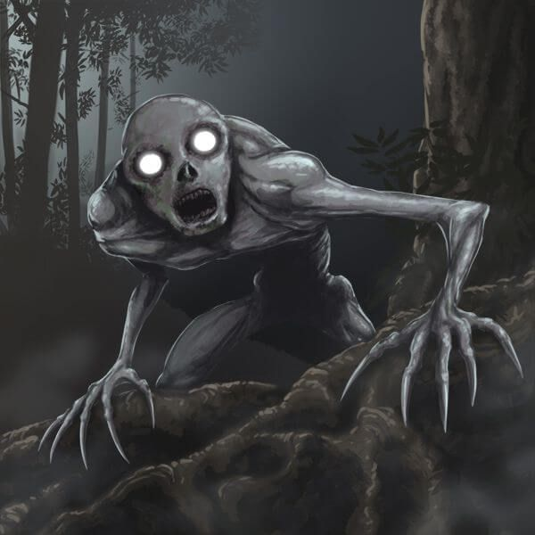
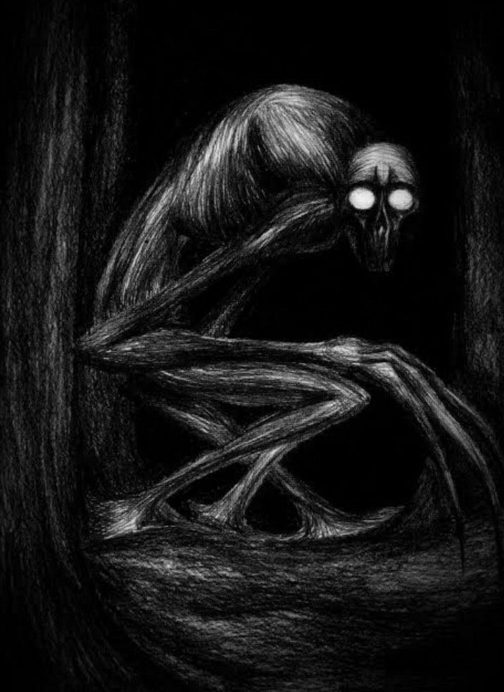
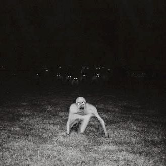
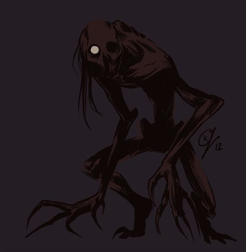

CREEPYPASTA
THERAKE
The Rake é uma criatura humanoide fictícia conhecida por sua aparência magra, pele pálida, membros compridos e olhos assustadores. Suas histórias circulam na internet e descrevem uma figura misteriosa que aparece durante a noite, geralmente em locais isolados.



O QUE ACONTECE?
Nas narrativas, pessoas encontram uma criatura agachada ou andando de quatro em florestas, casas abandonadas e quartos escuros. Ela costuma observar suas vítimas silenciosamente antes de se aproximar de maneira inesperada.
Algumas versões descrevem sons estranhos durante a madrugada, encontros repentinos e a sensação de que algo está escondido nas proximidades. A aparência e o comportamento da criatura variam de acordo com a história.

CARACTERÍSTICAS
play_arrow ORIGEM
Criatura de terror que ganhou popularidade por meio de histórias colaborativas publicadas na internet durante os anos 2000.
person PRINCIPAL PERSONAGEM
The Rake, uma criatura humanoide misteriosa.
skull APARÊNCIA
Corpo muito magro, pele pálida, braços e pernas compridos e olhos escuros ou brilhantes, dependendo da versão.
warning LOCAL
Florestas isoladas, casas abandonadas, ambientes rurais e quartos durante a madrugada.

CURIOSIDADES
- The Rake ficou conhecido por relatos fictícios de encontros noturnos.
- Sua aparência é frequentemente comparada à de outras criaturas humanoides do terror.
- Inspirou ilustrações, vídeos, jogos independentes e histórias de fãs.
- Não há evidências confiáveis de que a criatura exista na realidade.
